2026-aujourd'hui, Champs-sur-Marne (77)
École d'Urbanisme de Paris
M2 Territoire, Réseaux, Aménagement, Mobilités, Environnement (TRAME), spécialité Transports et mobilités
Paris, France
Étudiant urbaniste
Je suis à la recherche d'un stage de fin d'études de 4 à 6 mois, disponible entre le 15 mars et le 30 septembre 2027.
Étudiant en Master 2 Territoire, Réseaux, Aménagement, Mobilités, Environnement (TRAME), spécialité Transports et mobilités, une formation commune de l'École d'Urbanisme de Paris et de l'École nationale des ponts et chaussées, à l'interface des sciences humaines et sociales et des sciences de l'ingénieur pour former à l'analyse, à la conception et au pilotage de réseaux. Cette formation m'apporte des compétences en planification et en exploitation des systèmes de transport en tenant compte de leur résilience, ainsi qu'en construction de stratégies partagées entre acteurs publics/privés pour exercer des métiers au sein de la maîtrise d'ouvrage urbaine et de la conduite de projets territoriaux au sein de collectivités, d'aménageurs ou d'opérateurs de transport.
Mon parcours en géographie et urbanisme m'a doté d'une approche rigoureuse du diagnostic territorial, des réglementations d'urbanisme et du montage de projet, ainsi qu'une bonne maîtrise de l'analyse statistique et cartographique grâce à des outils comme QGIS.
En parallèle de mes études, j'occupe depuis trois ans un emploi étudiant à Disneyland Paris, où j'ai acquis une réelle capacité d'adaptation et de travail en équipe, ainsi qu'une pratique courante de l'anglais au quotidien.
Outils
Langues
2026-aujourd'hui, Champs-sur-Marne (77)
M2 Territoire, Réseaux, Aménagement, Mobilités, Environnement (TRAME), spécialité Transports et mobilités
2025–2026, Nanterre (92)
M1 Urbanisme et aménagement, parcours Projet Urbain et Montage d'Opérations (PUMO)
2022–2025, Paris 13e arr.
Licence Géographie et aménagement, parcours Environnement et Développement (GAED)
sep. 2026-aujourd'hui
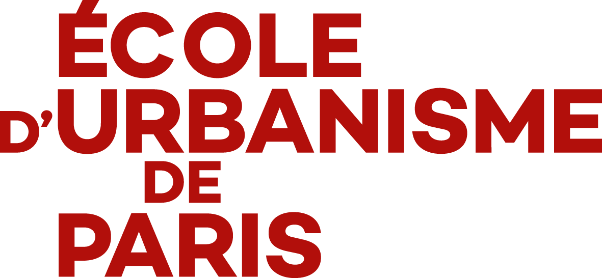
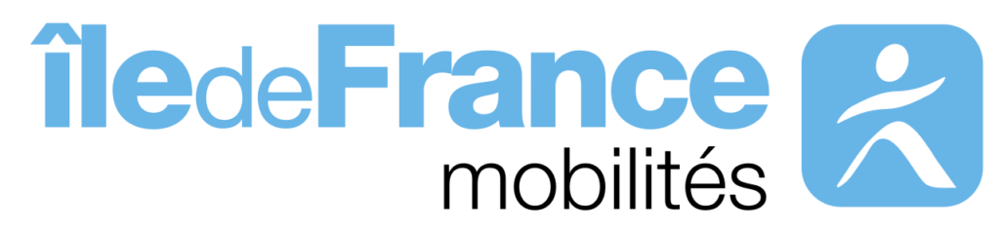
Le développement d'un réseau de bornes de recharge d'accès public en Île-de-France : quelle trajectoire ?
Île-de-France Mobilités vise 100 000 points de charge ouverts au public en 2030 pour accompagner la transition vers le véhicule électrique, un levier majeur de la baisse des émissions du secteur des transports. L'objectif de cet atelier est d'évaluer si la trajectoire actuelle de déploiement permet d'atteindre l'objectif, et d'en apprécier la qualité du point de vue de l'offre de service rendue aux automobilistes (notamment en matière de couverture territoriale, de disponibilité, de lisibilité tarifaire et d'interopérabilité). Nous réalisons un état des lieux de l'offre existante et des entretiens avec les acteurs du déploiement, à savoir les syndicats d'énergie, les collectivités territoriales et les opérateurs privés.
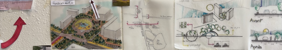
avr. 2026
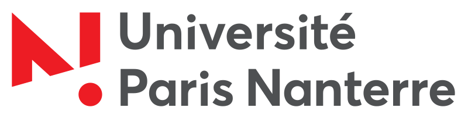
Comment reconnecter les espaces publics d'un quartier minéralisé pour en faire un cœur de vie apaisé et végétalisé ?
Lors d'une semaine intensive de projet organisée avec le CAUE 92, nous avons repensé le secteur des Vallées, à La Garenne-Colombes et Bois-Colombes, que notre diagnostic décrit comme un quartier très minéralisé et assez dépendant de la voiture. Notre projet « Le fil vert de la jeunesse » associe désimperméabilisation, végétalisation et apaisement des circulations pour relier les principaux lieux de vie du quartier. Nous avons réalisé de nombreuses illustrations, plans, coupes de rue, perspectives ou encore schémas de principe, qui donnent à voir une « rue aux écoles » sécurisée, un marché requalifié en lieu de vie intergénérationnel et une trame verte continue.
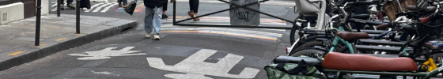
jan.–avr. 2026
Dans quelle mesure un même espace public peut-il être vécu, perçu et approprié différemment selon qu'on l'habite, qu'on le traverse ou qu'on le visite ?
Cette enquête ethnographique interroge le Marais comme un espace public vécu différemment selon ses usagers. L'objectif est de comprendre les pratiques, perceptions et ambiances du quotidien à travers une analyse sensible allant au-delà de la carte. La méthode combine parcours commentés, parcours sensibles via des croquis réalisés par les personnes interrogées elles-mêmes, afin de saisir la parole en mouvement et les ressentis propres à chaque profil d'usager.
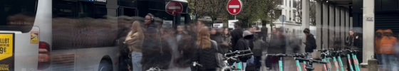
jan.–avr. 2026
Comment se déplacer sur un territoire dont l'organisation des mobilités produit elle-même des inégalités d'accessibilité ?
Réalisé dans le cadre d'un atelier de diagnostic territorial, ce travail porte sur le territoire formé par les communes de Poissy, Carrières-sous-Poissy et Villennes-sur-Seine, dans les Yvelines. Il se structure en deux temps complémentaires : un diagnostic quantitatif interrogeant la manière dont la morphologie urbaine, la structure sociale des communes et les transformations de l'offre de transport produisent des inégalités d'accessibilité, puis un diagnostic qualitatif resserré sur la gare de Poissy, questionnée comme espace d'intermodalité vécu, à travers les perceptions et récits de ses usagers.
sep.–déc. 2025
Dans quelle mesure une ville industrialo-portuaire longtemps perçue comme une ville « où l'on ne va pas » se transforme-t-elle en destination touristique structurée ?
Notre voyage d'étude de Master 1 s'est déroulé au Havre lors d'une semaine de terrain menée du 13 au 17 octobre 2025. Face à l'héritage industrialo-portuaire de la ville, longtemps perçue comme une ville « où l'on ne va pas », notre enquête interroge dans quelle mesure Le Havre tente aujourd'hui de se transformer en projet structuré d'attractivité touristique. Entre patrimoine Perret classé à l'UNESCO, identité impressionniste et dimension balnéaire en essor, la commune cherche à dépasser son image de ville de passage.
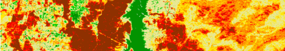
jan.–avr. 2025
Comment les types de sol et les conditions environnementales locales influencent-ils la dynamique de revégétalisation ?
Ce projet de télédétection analyse la régénération de la végétation sur un secteur de 380 km² du parc national de Kosciuszko (Nouvelle-Galles du Sud, Australie), fortement touché par les feux de forêt du Black Summer 2019-2020. L'objectif est d'évaluer l'intensité des incendies selon le type de couverture végétale et la proximité des ressources en eau, deux facteurs aussi susceptibles de favoriser la vitesse de reprise végétale. Notre démarche mobilise des images satellites Sentinel-2 et le calcul d'indices spectraux (NDVI, NBR), croisés avec le type d'occupation du sol et la topographie, sous QGIS et R.
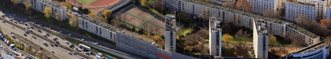
sep.–déc. 2024
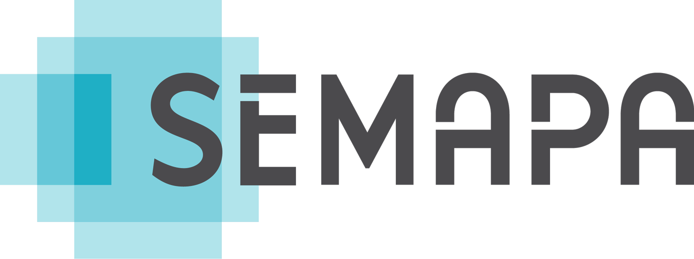
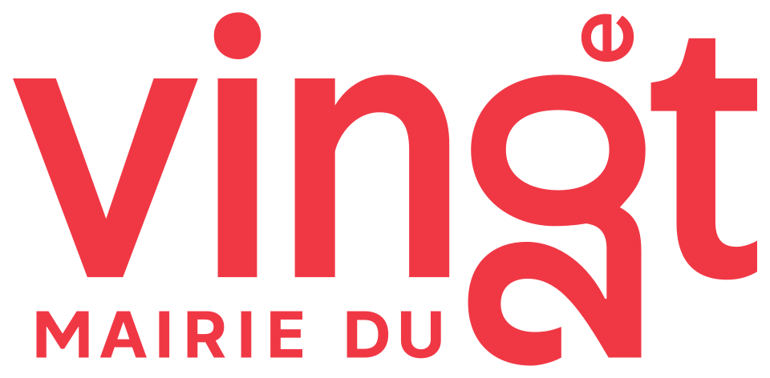
Peut-on transformer une coupure urbaine en lien, quand le périphérique est à la fois la cause de l’enclavement et l’élément structurant du quartier ?
La SEMAPA et la mairie du 20e arrondissement de Paris nous ont commandé des études préliminaires portant sur des intentions de projet pour l'avenir du quartier Python-Duvernois. Situé à l'extrémité est du 20e arrondissement de Paris, en bordure du périphérique et de la frontière avec Bagnolet, ce quartier souffre d'un enclavement persistant depuis les années 1950. Tout d'abord, nous avons réalisé un diagnostic territorial du quartier portant sur son bâti, ses circulations et ses usages. Puis nous avons élaboré un projet urbain visant à répondre aux dysfonctionnements identifiés et à recréer une continuité avec le reste de l'arrondissement.
sep.–déc. 2024
Dans une ville réputée pour sa végétation, la desserte des quartiers de Nantes garantit-elle un accès équitable aux espaces verts ?
L'objectif de ce mini-projet SIG est de déterminer si tous les quartiers de Nantes ont un accès équivalent aux espaces verts, selon la qualité de leur desserte en transports en commun et en pistes cyclables. Nous avons croisé les quartiers, l'occupation du sol, les arrêts du réseau Naolib et les aménagements cyclables. Sous QGIS, une série de traitements nous ont permis d'isoler la végétation réellement accessible, puis de quantifier, quartier par quartier, la part de végétation et la superficie d'espaces verts accessibles. Ces résultats restent à nuancer : la précision des données de végétation, le choix des distances de zones tampon, l’exclusion des zones privées et l’absence de données d’usage limitent la portée de l’analyse.
jan.–avr. 2024
Quelles motivations sous-tendent les choix de mobilité des usagers à Bercy, et comment façonnent-elles des expériences différenciées d'un même territoire ?
Ce diagnostic est né d'une curiosité de terrain face au flux incessant de voyageurs et de valises qui traversent quotidiennement le quartier de Bercy, dans le 12e arrondissement de Paris. La diversité des profils (entre touristes et voyageurs d'affaires), et la manière dont l'expérience diffère selon le mode de transport emprunté ont motivé notre choix de terrain, couvrant la gare routière de Bercy-Seine, la gare SNCF de Bercy Bourgogne-Pays d'Auvergne et la station de la ligne 14 du métro. À travers une enquête de terrain, entretiens semi-directifs et observations, nous interrogeons les motivations qui sous-tendent les choix de mobilité des usagers à Bercy, que ce soit par le train, le bus ou le métro.
mai 2023-aujourd'hui, Chessy (77)
Opérateur-Animateur d'Attractions (OAA)
Accueil, exploitation de l'attraction, sécurité et gestion des flux de visiteurs.
Vendeur en boutiques et
Coordinateur caisses
Vente, conseil client et gestion de la caisse. Gestion du coffre et apport en numéraire.
Vendeur en kiosques de restauration
Prise de commande et service en kiosques.
déc. 2022-jan. 2023, Noisy-le-Grand (93)
Vente en boulangerie-pâtisserie
Préparation, emballage et mise en rayon.
oct 2023-aujourd'hui, Chessy (77)
Programme de bénévolat des employés de Disneyland Paris, engagés pour des causes de tous horizons.
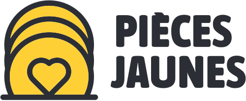
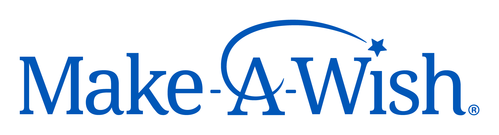
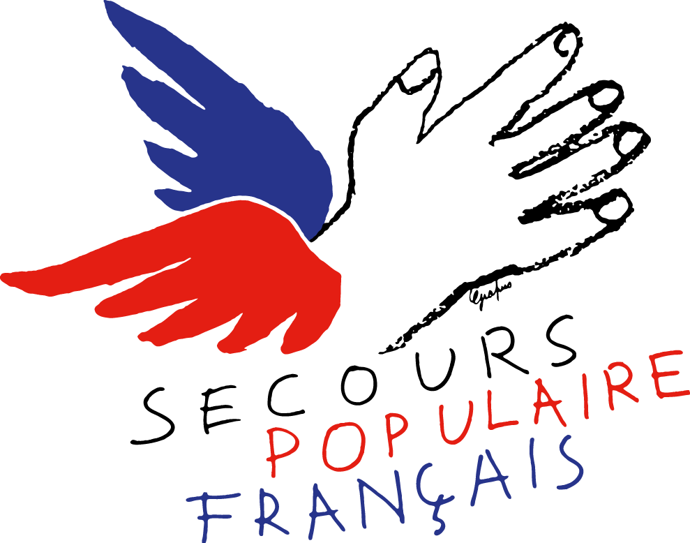
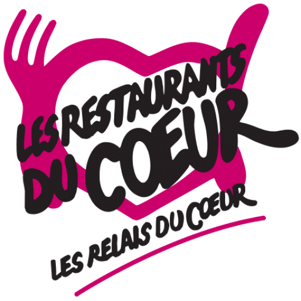